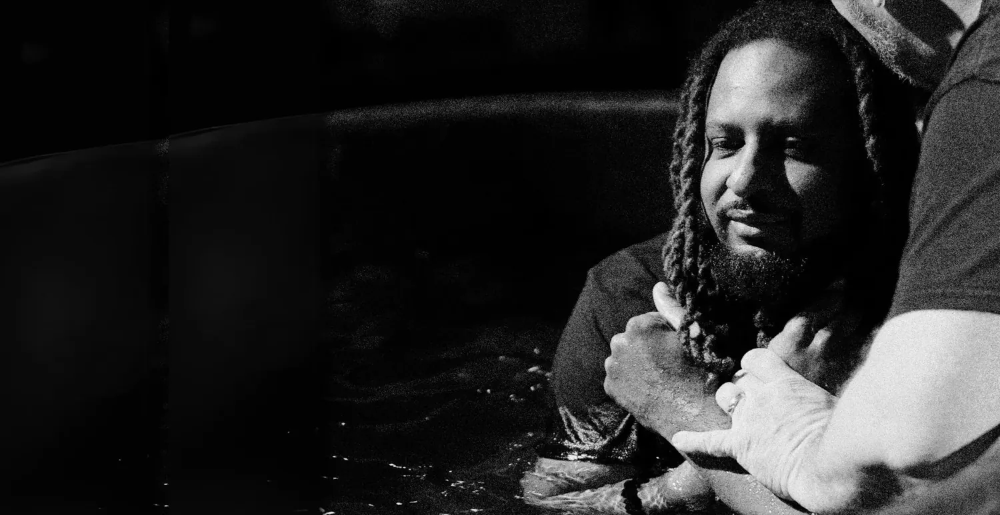
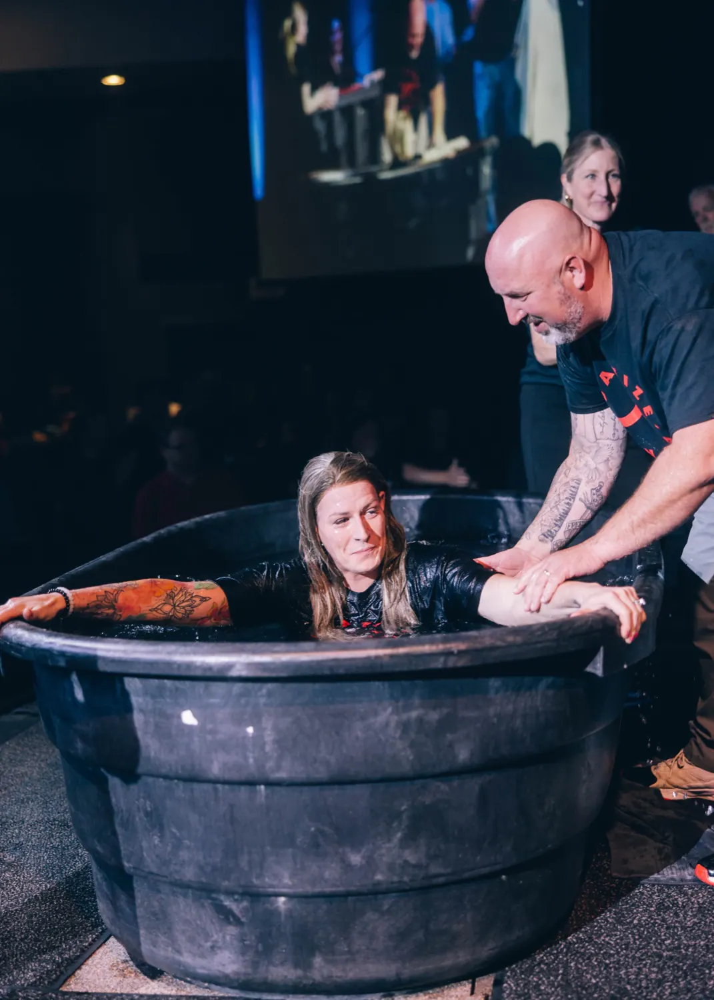
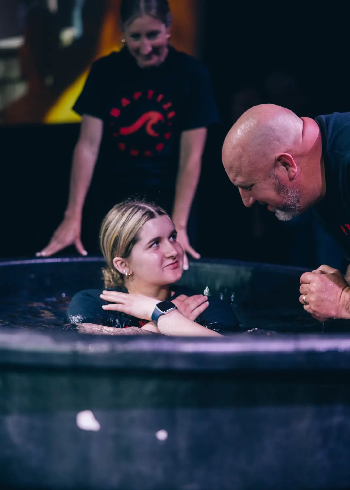

At Movement Church, we believe baptism is an important next step for anyone who has decided to follow Jesus. It’s a public declaration of your personal faith — that you’ve trusted Jesus as your Savior and are choosing to walk in new life with Him.
“Those who believed… were baptized… that day!”
Acts 2:41
From the very beginning of the Church, those who believed didn’t wait — they responded right away.
“Then Philip began with that very passage of Scripture and told him the good news about Jesus. As they traveled along the road, they came to some water and the man said, ‘Look, here is water! What can stand in the way of my being baptized?’”
Acts 8:35–36
Baptism doesn’t mean you have it all together — it means you’ve surrendered your life to the One who does. If you’ve made the decision to follow Jesus, there’s no reason to wait. Baptism is your next step.
Questions about baptism

What is baptism?
Baptism is an outward expression of an inward decision. It’s a public declaration that you’ve chosen to follow Jesus and are committing your life to Him.
Who should be baptized?
Anyone who has made the decision to follow Jesus and accept Him as Lord and Savior. Baptism follows belief — it’s your next step after salvation.
Do I need to be baptized to be saved?
No. Salvation comes through faith in Jesus Christ alone. Baptism doesn’t save you — it’s a response to being saved, an act of obedience and identification with Christ.
What does baptism symbolize?
It represents dying to your old life and being raised to new life in Jesus. It mirrors Jesus’ own death, burial, and resurrection.
When should I get baptized?
As soon as you’ve made the decision to follow Jesus. In Scripture, we see people getting baptized immediately after believing — there’s no reason to wait!
Is there an age requirement for baptism at Movement Church?
At Movement Church, we ask that anyone being baptized is 12 years old or older. Why? Because baptism is a personal and thoughtful decision to follow Jesus. Around age 12, most students begin to truly understand the weight and meaning of salvation, sin, and surrender. If your child is under 12 and showing interest, we’d love to talk with your family and help them grow in their understanding of faith until they’re ready to take this step for themselves.
How does Movement Church baptize people?
We practice full immersion in water, just like Jesus was baptized. It’s a powerful picture of being buried with Christ and raised to new life.
How do I sign up to be baptized?
We’d love to celebrate with you! Click the button below to register for our next Baptism Sunday, and someone from our team will connect with you soon.

Jesus changes everything.